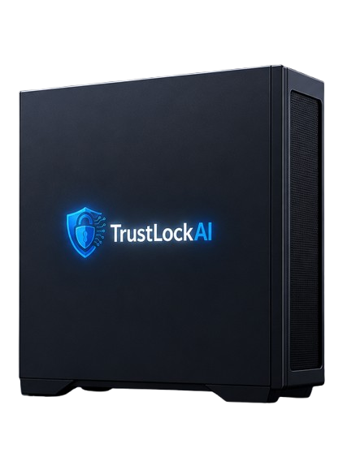

TrustLockAI is a standalone AI server that plugs into the safety systems you already run and applies modern AI to adverse-event case work — with the model and your patient data sealed inside your own network. Zero egress, by architecture.

Case volumes and literature keep rising; trained safety associates are scarce. Modern AI could absorb the repetitive intake and coding work — but patient safety data can't be sent to a public cloud model under GVP, GxP, and DPDP. So the work that would benefit most stays manual.
Unless the AI runs inside your own four walls.
Rack the sealed TrustLockAI appliance in your network or VPC. The AI model ships inside it — nothing to send out.
Connects to your safety database and document sources through standard APIs — it works with the software you already run.
Case intake, extraction, MedDRA coding assist, narrative drafting — the AI processes everything locally. Data never leaves the box.
Safety associates review and approve; full audit trail; results flow back as E2B into your safety database.
Delivered as a sealed server you own — not a cloud subscription. Built for mid-size CROs / PV-BPOs and pharma safety teams.
TrustLockAI is a server you own, not a per-token cloud bill. Pricing scales with the appliance tier and the workflows you switch on — most teams see a lower 3-year TCO than cloud AI plus the data-residency risk it removes. Tell us your volume and we'll send a tailored quote and TCO breakdown.
Book a demo and a free data-leak & cloud-cost audit of your case-intake workflow. We'll show extraction, coding, narrative, and E2B export with the network cable pulled.